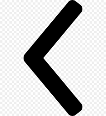

covoiturage
vos voyages seront moin cher

Le covoiturage est l'utilisation conjointe et organisée (à la différence de l'auto-stop) d'une voiture automobile, par un conducteur non professionnel et un ou plusieurs tiers passagers, dans le but d'effectuer un trajet commun. Il procure des avantages individuels (partager les dépenses de carburant et de maintenance, agrémenter les voyages, développer le lien social) et collectifs (augmenter le taux de remplissage des véhicules, diminuer les embouteillages et la pollution). En France, le covoiturage est indemnisé dans la limite du barème fiscal kilométrique, ce qui permet au plus grand nombre de se déplacer. Le conducteur ne doit donc pas faire de bénéfices (l'argent qu'il reçoit doit correspondre au partage des frais liés au trajet). Il dépend de la motivation des particuliers et repose en grande partie sur un principe collaboratif d'auto-organisation mais peut être encouragé, coorganisé ou aidé par des collectivités ou entreprises qui y trouvent divers bénéfices. Le mot ne fait son apparition dans la loi qu'à partir de 20155.
Le principeÀ la différence du taxi où le passager choisit la destination, en covoiturage, c'est le conducteur qui offre de partager son véhicule, éventuellement gratuitement6 et fixe le trajet. Un conducteur propose aux passagers de les transporter dans sa voiture pour un trajet (ou une portion de trajet) qu'il doit lui-même effectuer, et donc à la date et à l'heure qu'il a décidées. Généralement, le lieu de départ, déterminé à l'avance, est le même pour tout le monde. À l'arrivée, le conducteur dépose les passagers là où lui-même s'arrête, ou bien à l'endroit que chacun souhaite, en évitant de faire un grand détour. Il peut alors laisser ses passagers par exemple à proximité d'un transport en commun ou bien là où un membre de la famille ou un ami pourront les prendre en charge. Le conducteur peut demander à ce qu'un des passagers le remplace au volant afin qu'il puisse se reposer un peu. Le partage des frais est laissé à l'appréciation du conducteur. La formule la plus classique consiste à diviser le coût du carburant et des péages éventuels par le nombre de personnes. Les frais généraux tels que ceux d'entretien ou d'assurance peuvent être inclus dans le calcul du coût du trajet.